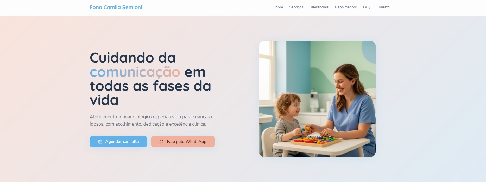
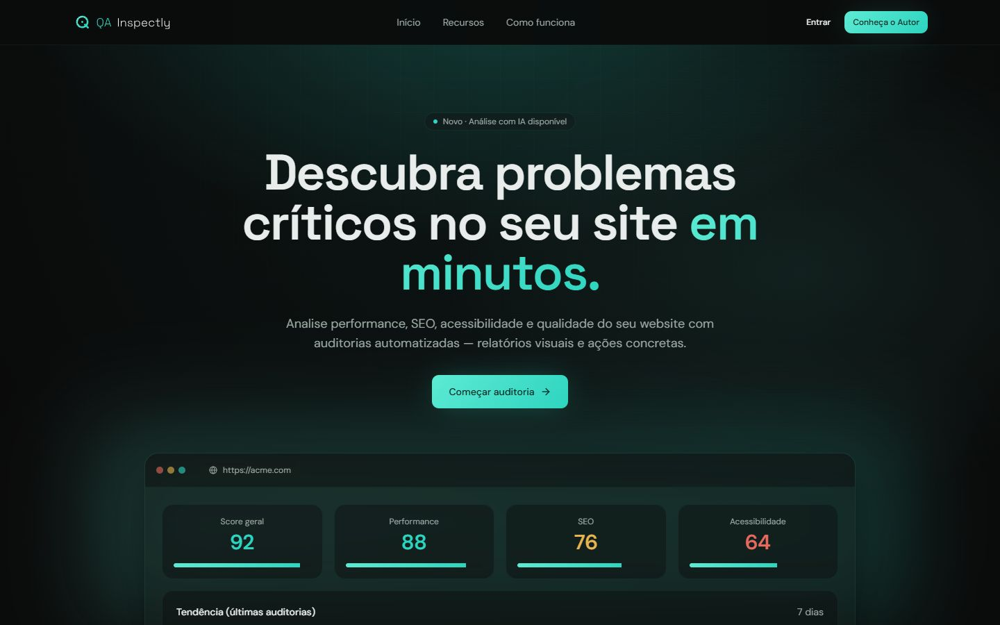

O problema
Cliente que não te encontra compra do concorrente.
Invisível no Google
Alguém procura o seu serviço na sua cidade — e encontra o concorrente, porque você não tem um site profissional.
Atendimento que se perde
Mensagens acumulam no WhatsApp, respostas demoram e o cliente desiste. Cada conversa não respondida é uma venda perdida.
Sem tempo para o digital
Você cuida do negócio o dia inteiro. Sobrar tempo para montar site, responder mensagem e organizar sistema não é realidade — e não precisa ser.
A solução
Menos processos manuais, mais clientes atendidos.
Sem jargão técnico e sem enrolação: você me diz o problema, eu entrego a solução funcionando.
Sites profissionais
Seu comércio encontrado no Google, com um site rápido, bonito e feito para transformar visita em contato.
Landing pages
Página única focada em um objetivo: fazer o cliente clicar, chamar e fechar.
Atendimento com IA
Respostas automáticas e inteligentes no seu WhatsApp, 24 horas por dia. Nenhum cliente fica sem retorno.
Configuração de sistemas
Agenda, cadastro de clientes, controle do negócio — os sistemas certos, configurados e funcionando, sem você precisar entender de tecnologia.
Projeto no ar
Quem já confiou

Camila Semioni — Fonoaudióloga
Site profissional para clínica de fonoaudiologia em Joaçaba/SC: presença digital completa para pacientes encontrarem, conhecerem e agendarem com confiança.
Visitar o site ao vivo →
QA Inspectly — Auditoria de sites com IA
Plataforma que analisa performance, SEO, acessibilidade e qualidade de qualquer site com auditorias automatizadas — relatórios visuais e ações concretas em minutos.
Visitar o site ao vivo →Como funciona
Do primeiro contato à entrega, sem complicação.
Conversa inicial
Você me conta o problema pelo WhatsApp. Sem formulário, sem burocracia.
Proposta clara
Recebe o que será feito, o prazo e o valor — tudo por escrito, sem surpresa.
Construção
Eu executo e você acompanha. Ajustes fazem parte do processo.
Entrega funcionando
Você recebe tudo no ar, testado e pronto para trazer clientes.
Quem faz
Tecnologia que resolve.
Sou Mateus Semioni, e há mais de 7 anos trabalho com tecnologia — boa parte deles dedicados a qualidade de software: garantir que sistemas funcionem de verdade, sem falha, no dia a dia.
É essa exigência que aplico em cada projeto: resolvo em dias o que trava seu negócio há meses — e entrego testado, funcionando e sem dor de cabeça para você.
Dúvidas frequentes
Perguntas que todo mundo faz antes de fechar
Quanto custa um site ou uma automação?
Depende do que o seu negócio precisa — um site simples custa menos que uma automação completa. Por isso a proposta é sempre personalizada e por escrito, com valor fechado, sem mensalidade escondida. A conversa inicial não custa nada.
Em quanto tempo fica pronto?
Landing pages e sites simples ficam prontos em dias, não meses. O prazo exato vai por escrito na proposta — e prazo dado é prazo cumprido.
Não entendo nada de tecnologia. Vou conseguir usar?
Sim — esse é exatamente o ponto. Você não precisa entender de tecnologia: eu configuro tudo funcionando e te mostro o que precisa saber, em linguagem simples.
E se eu precisar de ajuste depois da entrega?
Ajustes combinados fazem parte da entrega. Depois disso, você pode contar comigo para manutenção e evolução do projeto sempre que precisar.
Por que não usar um template pronto ou fazer sozinho?
Você pode — mas um template genérico não resolve o seu problema específico e passa a imagem errada para o cliente. Aqui o projeto é feito sob medida para o seu negócio, com aparência profissional e foco em gerar contato.
Pronto para tirar seu negócio da invisibilidade?
Me chame no WhatsApp e me conte o seu problema. A conversa é gratuita — a proposta chega clara e por escrito.
Começar agora pelo WhatsApp